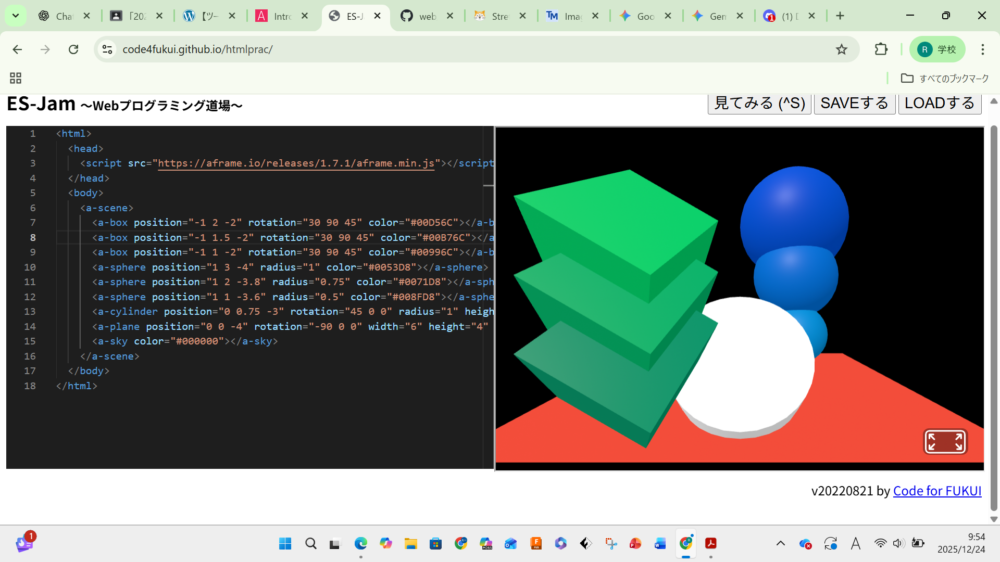

3-1 JavaScript体験：VR空間を作る

自作した３次元空間
1.内容
WEBプログラミング道場と呼ばれるサイトを使用して、A-frameというサイトから持ってきたURLの3D空間での球体、円柱、正方形
の位置や高さ、球体の半径、色など様々な設定を変更する等の作業をJavaScriptと呼ばれるプログラミング言語を用いて行った。
2.感想
様々な設定を変更する際は、前後や高さに座標などの様々な数学的な要素を使用したが、自分は数学や3次元的に物体をとらえることが苦手なので
とても難しかった。